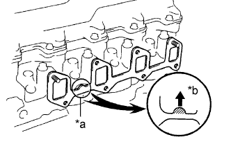

ВПУСКНОЙ КОЛЛЕКТОР > УСТАНОВКА |
| 1. INSTALL INTAKE MANIFOLD |
|  |
Install a new gasket to the cylinder head with the protrusion facing upward.
| *a | Protrusion |
| *b | Upward |
 |
Install the intake manifold with the 6 bolts and 2 nuts. Uniformly tighten the bolts and nuts in several steps.
| *1 | Nut |
Install the wire harness bracket with the bolt.
| 2. INSTALL INJECTION PIPE |
Install the 2 lower clamps to the intake manifold.
Using a 17 mm union nut wrench, install the 4 injection pipes.
Secure the injection pipes by installing the 2 upper pipe clamps and 2 nuts.
| 3. INSTALL DIESEL THROTTLE BODY ASSEMBLY |
Install a new gasket and the diesel throttle body.
Connect the throttle control motor connector.
Install the bracket with the 2 bolts.
Connect the throttle open switch connector.
| 4. INSTALL INTAKE FLANGE |
Install a new gasket and the intake flange with the 3 nuts.
Connect the manifold absolute pressure sensor connector.
Install the heater hose bracket with the bolt.
Connect the PCV hose.
| 5. INSTALL INTAKE PIPE |
Install the intake pipe with the 2 bolts.
Tighten the intake pipe clamp.
| 6. BLEED INJECTION PIPE |
Install the 2 lower clamps to the intake manifold.
 |
Install the 4 injection pipes.
| *a | for Injection Nozzle Side |
| *b | for Injection Pump Side |
Install the 2 upper pipe clamps with the 2 nuts.
| 7. INSPECT FOR FUEL LEAK |
Check that there are no fuel leaks anywhere in the fuel system after performing maintenance.